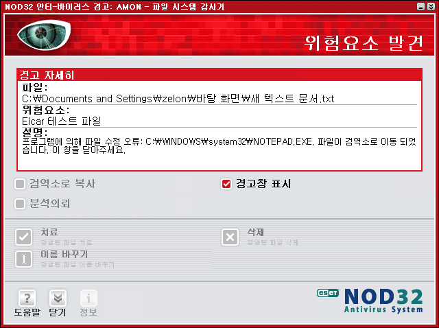

백신이 시스템 감시를 제대로 하고 있는지 테스트하는 Eicar 테스트
얼마전 게임방에서 급히 작업할 일이 있어서 USB 메모리를 들고 갔다가, USB 메모리의 autorun.inf 를 통해서 전파되는 바이러스를 데리고 온 적이 있었다. 다행히 리눅스를 메인으로 쓰고, 윈도우를 쓰는 노트북에서는 NOD32 라는 백신 프로그램이 바로 발견해줘서 크게(?) 전파되는 피해는 막았지만, 그 이후로 바이러스에 대한 경각심과 게임방에 대한 경계심을 더욱 철저히 할 수 있었다. 참고로 USB 메모리를 가진 분들은 USB 메모리의 루트에 autorun.inf 파일을 열어서 이상한 실행 파일을 실행시키고 있지 않은지 한번 체크해보길 바란다. 나도 바이러스에 안 걸린지 7년쯤된 유저라고 생각했는데, 게임방은 바이러스의 온상이라는 것(사실 잘 가는 게임방이 아니라 급하게 들어간 아무(!) 게임방이라서 더욱 그랬었는듯)을 다시 깨달았다. 여튼 바이러스는 조심 또 조심하자.
그런데 백신을 보통 설치해놓고 잘 쓰는 유저라도 이런 생각이 들 수 있다. '내가 바이러스에 잘 안 걸리게 생활하는지, 아니면 이 백신이 그냥 잠자고 있는건지...' 그때 다음과 같은 테스트를 해보면 백신이 제대로 잘 동작하고 있는지 알 수 있다.
- 바탕화면에 a.txt 라는 텍스트 파일을 만든다.
- 텍스트 파일에 X5O!P%@AP[4\PZX54(P^)7CC)7}$EICAR-STANDARD-ANTIVIRUS-TEST-FILE!$H+H* 라는 문자열을 넣고 저장한다.
- 저장하자 마자 백신 프로그램이 반응해서 이 파일은 치료가 필요한 파일이라는 메시지를 보여주거나 해당 파일을 삭제한다.

이 테스트를 eicar 테스트라고 부르며 관련 검색을 하면 좀 더 많은 정보를 알 수 있다.